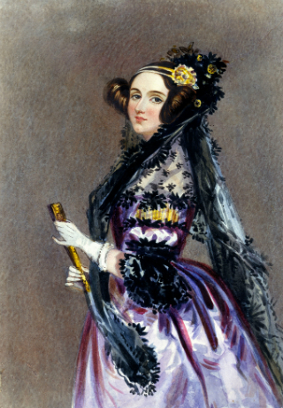

The Society for Women in Science, Technology, Engineering and Math presents:
"Geeking Out: Women Passionate about Computer Science"
in Celebration of Ada Lovelace Day!
Ada Lovelace, daughter of romantic poet Lord Byron, was the first computer programmer, designing an algorithm for Charles Babbage's hypothetical Analytical Engine in 1842. Her work would later influence Alan Turing as he worked on the fundamentals of modern computing a century later.